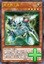
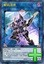
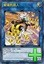
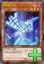
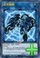

以下是可以在118.178.111.167 23333端口使用的先行卡的列表。下载补丁后即可使用。
使用方法：原版游戏下载补丁后解压至游戏文件夹，YGOMobile请自定义数据库（方法请查看压缩包内使用说明），暂不保证对其他版本的支持。
资料来源：任天堂世界论坛。
脚本作者：ygopro-pre-script，YGOPRO。目前所有脚本来自于以上这2个项目，在此对各自的贡献者表示感谢。
版权声明：转载请注明出自本页面，并完整保留附带的使用说明文档。如果您想对本项目进行修改，请移步这里，但我们建议您直接参与官方项目ygopro-pre-script。
星星和加号图标是Yusuke Kamiyamane的作品。
更新记录
- 2017-04-03 00:43
- 修复：抢救代理驱动员②效果报错的问题。
- 2017-04-03 00:37
- 修复：防火龙②效果触发错误的问题。
- 修复：淘气仙星灯光舞台强制发动的卡不能选择对象的问题。
- 2017-04-02 17:59
- 新卡：近期公布新卡9张。
- 更新：更改部分卡片密码。
- 注意：部分连接召唤与电子界族相关卡片只能在内测版本更新后使用。
- 2017-03-27 01:11
- 新卡：近期公布新卡33张。
- 注意：连接召唤预计将于近期开始测试，但目前相关的卡全部无法正常使用。
- 2017-03-16 23:16
- 新卡：电子界工具、战线复归。
- 修复：霸王眷龙 凶饿毒能复制魔法·陷阱卡的问题。
- 2017-03-13 15:14
- 新卡：霸王眷龙 凶饿毒、紧急救急救命救援。
- 修复：暗黑界的洗脑的处理。
- 2017-03-06 23:43
- 修复：DD 恶妖提丰和DDD 怒涛大王 决策凯撒无法使用的问题。
- 2017-03-06 00:21
- 新卡：近期公布新卡23张。
- 注意：连接召唤相关规则暂未确定，目前相关的卡全部无法正常使用。
- 更新：删除已经正式更新的卡。
卡片列表
| 卡图 | 卡名 | 效果 |
|---|---|---|
|  | 电子界工具 | [怪兽|效果] 电子界/光 [★4] 1400/300 这个卡名的②的效果1回合只能使用1次。 ①：这张卡召唤成功时，以自己墓地1只2星以下的怪兽为对象才能发动。那只怪兽守备表示特殊召唤。这个效果特殊召唤的怪兽的效果无效化。 ②：这张卡从场上送去墓地的场合才能发动。在自己场上把1只「工具衍生物」（电子界族·光·2星·攻/守0）特殊召唤。 |
|  | 解码语者 | [怪兽|效果|连接] 电子界/暗 [LINK-3] 2300/- [↑][↙][↘] 效果怪兽2只以上 ①：这张卡的攻击力上升这张卡所连接区的怪兽数量×500。 ②：自己场上的卡为对象的对方的魔法·陷阱·怪兽的效果发动时，把这张卡所连接区1只自己怪兽解放才能发动。那个发动无效并破坏。 |
| 内存云羊 | [怪兽|效果] 电子界/光 [★4] 1800/1000 这个卡名的效果1回合只能使用1次。 ①：把自己场上1只怪兽解放，以自己墓地1只电子界族怪兽为对象才能发动。那只怪兽特殊召唤。 | |
|  | 蜜蜂机器人 | [怪兽|效果|连接] 电子界/光 [LINK-2] 1900/- [←][→] 电子界族怪兽2只 ①：这张卡所连接区的怪兽不会成为效果的对象，不会被战斗破坏。 |
| 连接杀戮者 | [怪兽|效果] 电子界/地 [★5] 2000/600 ①：自己场上没有怪兽存在的场合，这张卡可以从手卡特殊召唤。 ②：1回合1次，把最多2张手卡丢弃，以丢弃数量的场上的魔法·陷阱卡为对象才能发动。那些卡破坏。 | |
| 比特机灵 | [怪兽|通常] 电子界/地 [★2] 200/2000 电子空间发现的新品种。它的信息量非常少。 | |
| 娱乐伙伴 纸牌守卫者 | [怪兽|效果|灵摆] 岩石/地 [★3] 1000/1000 8/8 ←8 【灵摆】 8→ ①：1回合1次，以自己场上1只表侧守备表示怪兽为对象才能发动。那只怪兽的守备力变成自己场上的全部表侧守备表示怪兽的原本守备力合计数值。 【怪兽效果】 ①：这张卡的守备力上升这张卡以外的自己场上的「娱乐伙伴」怪兽的原本守备力的合计数值。 | |
| 电脑网宇宙 | [魔法|场地] ①：自己场上的连接怪兽的攻击力上升300。 ②：1回合1次，以自己或者对方的墓地1只怪兽为对象才能发动。那只怪兽回到持有者卡组。 ③：场上的这张卡被效果破坏的场合发动。额外怪兽区域的怪兽全部送去墓地。 | |
|  | 网络龙 | [怪兽|效果] 电子界/暗 [★3] 1400/1200 ①：这张卡召唤成功时才能发动。从手卡·卡组把1只2星以下的通常怪兽守备表示特殊召唤。 |
| 锋利小鬼·棉花吞噬者 | [怪兽|效果|灵摆] 恶魔/暗 [★7] 2400/1600 1/1 ←1 【灵摆】 1→ ①：自己场上的融合怪兽的攻击力上升300。 ②：1回合1次，自己场上有「魔玩具」融合怪兽融合召唤的场合才能发动。自己从卡组抽1张。 【怪兽效果】 「锋利小鬼·棉花吞噬者」的怪兽效果1回合只能使用1次。 ①：这张卡特殊召唤成功的场合才能发动。给与对方为自己墓地的「魔玩具」怪兽数量×200伤害。 | |
|  | 连接蜘蛛 | [怪兽|效果|连接] 电子界/地 [LINK-1] 1000/- [↓] 通常怪兽1只 ①：1回合1次，自己主要阶段才能发动。从手卡把1只4星以下的通常怪兽在这张卡所连接区特殊召唤。 |
 | 霸王紫龙 异色眼猛毒龙 | [怪兽|效果|融合|灵摆] 龙/暗 [★10] 3300/2500 1/1 ←1 【灵摆】 1→ ①：1回合1次，以自己场上1只融合怪兽为对象才能发动。那只怪兽的攻击力直到回合结束时上升对方场上的怪兽数量×1000。 【怪兽效果】 「凶饿毒」怪兽＋「异色眼」怪兽 这张卡用融合召唤以及灵摆召唤才能特殊召唤。 ①：1回合1次，以对方场上1只表侧表示怪兽为对象才能发动。直到结束阶段，这张卡的攻击力上升那只怪兽的攻击力数值，这张卡得到和那只怪兽相同的原本的卡名·效果。 ②：怪兽区域的这张卡被破坏的场合才能发动。选自己的灵摆区域1张卡特殊召唤，这张卡在自己的灵摆区域放置。 |
 | DDD 超死伟王 黑地狱终末神 | [怪兽|效果|超量|灵摆] 恶魔/暗 [☆8] 3500/3000 1/1 ←1 【灵摆】 1→ ①：1回合1次，另一边的自己的灵摆区域有「DD」卡存在的场合才能发动。从额外卡组把「DDD 超死伟王 黑地狱终末神」以外的1只「DDD」超量怪兽特殊召唤。 【怪兽效果】 8星「DDD」怪兽×2 ①：这张卡超量召唤成功时才能发动。选自己的额外卡组1只表侧表示的「DD」灵摆怪兽在这张卡下面重叠作为超量素材。 ②：自己场上的灵摆怪兽不会被效果破坏。 ③：1回合1次，把这张卡1个超量素材取除，以自己场上的灵摆怪兽数量的对方场上的怪兽为对象才能发动。那些怪兽破坏。 ④：怪兽区域的这张卡被破坏的场合才能发动。这张卡在自己的灵摆区域放置。 |
 | 超重蒸鬼 铁道王-O | [怪兽|效果|同调] 机械/地 [★12] 2000/4800 「超重武者」调整＋调整以外的「超重武者」怪兽2只以上 这张卡在规则上也当作「超重武者」卡使用。 ①：这张卡可以用表侧守备表示的状态作出攻击。那个场合，这张卡用守备力当作攻击力使用进行伤害计算。 ②：1回合1次，把最多2张手卡丢弃，以丢弃数量的对方场上的卡为对象才能发动。那些卡破坏。 ③：1回合1次，自己主要阶段才能发动。双方墓地的魔法·陷阱卡全部除外，给与对方除外数量×200伤害。 |
 | 魔界台本「魔界的宴咜女」 | [魔法|永续] 这个卡名的①的效果1回合可以使用最多2次。 ①：把自己场上1只「魔界剧团」怪兽解放，以自己墓地1张「魔界台本」魔法卡为对象才能发动。那张卡在自己场上盖放。 ②：自己的额外卡组有表侧表示的「魔界剧团」灵摆怪兽存在，盖放的这张卡被对方的效果破坏的场合才能发动。从卡组把「魔界剧团」灵摆怪兽任意数量特殊召唤。 |
 | 急袭猛禽-最终要塞猎鹰 | [怪兽|效果|超量] 鸟兽/暗 [☆12] 3800/2800 12星怪兽×3 ①：有「急袭猛禽」超量怪兽在作为超量素材中的这张卡不受其他卡的效果影响。 ②：1回合1次，把这张卡1个超量素材取除才能发动。除外的自己的「急袭猛禽」怪兽全部回到墓地。 ③：这张卡的攻击破坏怪兽时，把自己墓地1只「急袭猛禽」超量怪兽除外才能发动。这张卡可以继续攻击。这个效果1回合可以使用最多2次。 |
 | 黄昏之忍者-上弦 | [怪兽|效果|灵摆] 战士/暗 [★7] 2000/1000 1/1 ←1 【灵摆】 1→ ①：自己的「忍者」怪兽向守备表示怪兽攻击的场合，给与对方为攻击力超过那个守备力的数值的战斗伤害。 【怪兽效果】 ①：把手卡1张「忍法」卡给对方观看才能发动。这张卡从手卡特殊召唤。 ②：这张卡向守备表示怪兽攻击的场合，给与攻击力超过那个守备力的数值的战斗伤害。 |
 | 亚马逊女帝 | [怪兽|效果|融合] 战士/地 [★8] 2800/2400 「亚马逊女王」＋「亚马逊」怪兽 ①：只要这张卡在怪兽区域存在，这张卡以外的自己场上的「亚马逊」卡不会被战斗·效果破坏。 ②：自己的「亚马逊」怪兽向守备表示怪兽攻击的场合，给与对方为攻击力超过那个守备力的数值的战斗伤害。 ③：融合召唤的这张卡被战斗破坏的场合或者因对方的效果从场上离开的场合才能发动。从自己的手卡·卡组·墓地选1只「亚马逊女王」特殊召唤。 |
 | 剑斗兽 罪斗 | [怪兽|效果] 兽战士/暗 [★5] 0/1000 ①：对方怪兽的直接攻击宣言时才能发动。这张卡从手卡特殊召唤，那只对方怪兽的攻击对象转移为这张卡进行伤害计算。这张卡不会被那次战斗破坏。 ②：这张卡用「剑斗兽」怪兽的效果特殊召唤成功的场合才能发动。从卡组把1只「剑斗兽」怪兽送去墓地。 ③：这张卡进行战斗的战斗阶段结束时让这张卡回到持有者卡组才能发动。从卡组把「剑斗兽 罪斗」以外的1只「剑斗兽」怪兽特殊召唤。 |
 | 命运英雄 梦乡人 | [怪兽|效果] 战士/暗 [★1] 0/600 这个卡名的效果1回合只能使用1次。 ①：这张卡在墓地存在，自己的「命运英雄」怪兽进行战斗的伤害计算时才能发动。这张卡从墓地特殊召唤，那只自己怪兽不会被那次战斗破坏，那次战斗发生的对自己的战斗伤害变成0。这个效果特殊召唤的这张卡从场上离开的场合除外。 |
 | No.41 泥睡魔兽 睡梦貘 | [怪兽|效果|超量] 恶魔/地 [☆4] 2100/2000 4星怪兽×2 这张卡的控制者在每次自己准备阶段把这张卡1个超量素材取除。不能取除的场合，这张卡破坏。 ①：攻击表示的这张卡不会成为对方的效果的对象，不会被对方的效果破坏。 ②：只要这张卡在怪兽区域守备表示存在，场上的表侧表示怪兽变成守备表示，场上的守备表示怪兽发动的效果无效化。 |
 | DDD 命运王 零·拉普拉斯 | [怪兽|效果|灵摆] 恶魔/暗 [★10] ?/0 1/1 ←1 【灵摆】 1→ 这个卡名的灵摆效果1回合只能使用1次。 ①：自己主要阶段才能发动。从自己的额外卡组选「DDD 命运王 零·拉普拉斯」以外的1只表侧表示的「DDD」灵摆怪兽加入手卡。 【怪兽效果】 ①：这张卡可以把自己场上1只「DDD」怪兽解放从手卡特殊召唤。 ②：这张卡和对方怪兽进行战斗的伤害计算前才能发动。这张卡的攻击力直到伤害步骤结束时变成那只对方怪兽的原本攻击力的2倍。 ③：这张卡向守备表示怪兽攻击的场合，给与攻击力超过那个守备力的数值的战斗伤害。 ④：这张卡1回合只有1次不会被战斗破坏。那个时候，自己受到的战斗伤害变成0。 |
 | 灵摆切换 | [陷阱|永续] 可以选择自己的灵摆区域1张卡；那张卡特殊召唤。可以选择自己的怪兽区域1只灵摆怪兽；那只怪兽在自己的灵摆区域放置。「灵摆切换」的效果1回合只能有1次使用其中任意1个。 |
 | 电子界男巫 | [怪兽|效果] 电子界/光 [★4] 1800/800 ①：1回合1次，以对方场上1只攻击表示怪兽为对象才能发动。那只怪兽变成守备表示。这个效果变成守备表示的回合，自己怪兽只能向作为对象的怪兽攻击，自己的电子界族怪兽向作为对象的守备表示怪兽攻击的场合，给与对方为攻击力超过那个守备力的数值的战斗伤害。 |
 | 备份秘书 | [怪兽|效果] 电子界/光 [★3] 1200/800 这个卡名的①的方法的特殊召唤1回合只能有1次。 ①：自己场上有电子界族怪兽存在的场合，这张卡可以从手卡特殊召唤。 |
 | 堆栈修复员 | [怪兽|效果] 电子界/暗 [★2] 100/600 这个卡名的效果在决斗中只能使用1次。 ①：这张卡为素材作连接召唤的场合，以这张卡以外的自己墓地1只作为那次连接召唤的素材的4星以下的电子界族怪兽为对象才能发动。那只怪兽守备表示特殊召唤。 |
 | 启动炮司令官 | [怪兽|效果] 电子界/地 [★4] 1700/1200 ①：只要这张卡在怪兽区域存在，这张卡以外的自己场上的电子界族怪兽的攻击力·守备力上升300。 ②：1回合1次，把自己场上1只电子界族怪兽解放，以对方场上1只表侧表示怪兽为对象才能发动。那只怪兽破坏。 |
 | 抢救代理驱动员 | [怪兽|效果] 电子界/光 [★6] 2200/2100 这个卡名的①②的效果1回合各能使用1次。 ①：这张卡在手卡·墓地存在，自己场上的电子界族连接怪兽被对方破坏的场合才能发动。这张卡特殊召唤。 ②：从手卡丢弃1张魔法卡，以自己墓地1只电子界族怪兽为对象才能发动。那只怪兽特殊召唤。这个效果特殊召唤的怪兽在这个回合不能直接攻击。 |
 | 淘气仙星·丽丽贝尔 | [怪兽|效果] 天使/光 [★2] 800/2000 这个卡名的①的效果1回合只能使用1次。 ①：这张卡用抽卡以外的方法加入手卡的场合才能发动。这张卡从手卡特殊召唤。 ②：这张卡可以直接攻击。 ③：这张卡给与对方战斗伤害时，以自己墓地1只「淘气仙星」怪兽为对象才能发动。那只怪兽加入手卡。 |
 | 淘气仙星·坎蒂娜 | [怪兽|效果] 天使/光 [★4] 1800/400 ①：这张卡召唤成功时才能发动。从卡组把1张「淘气仙星」卡加入手卡。 ②：只要这张卡在怪兽区域存在，每次对方把魔法·陷阱卡发动给与对方200伤害。 |
 | 刚鬼 固定眼镜蛇 | [怪兽|效果] 战士/地 [★3] 1600/0 这个卡名的①②的效果1回合各能使用1次。 ①：把自己场上1只「刚鬼」怪兽解放，以自己场上1只「刚鬼」怪兽为对象才能发动。那只怪兽的攻击力直到回合结束时上升解放的怪兽的原本攻击力数值。这个效果在对方回合也能发动。 ②：这张卡从场上送去墓地的场合才能发动。从卡组把「刚鬼 固定眼镜蛇」以外的1张「刚鬼」卡加入手卡。 |
 | 刚鬼 过肩摔霸王龙 | [怪兽|效果] 战士/地 [★4] 1800/0 这个卡名的②的效果1回合只能使用1次。 ①：这张卡召唤成功时才能发动。从手卡把1只「刚鬼」怪兽特殊召唤。 ②：这张卡从场上送去墓地的场合才能发动。从卡组把「刚鬼 过肩摔霸王龙」以外的1张「刚鬼」卡加入手卡。 |
 | 刚鬼 闪斧踢蝎 | [怪兽|效果] 战士/地 [★5] 2300/0 这个卡名的②的效果1回合只能使用1次。 ①：自己场上的怪兽不存在的场合或者只有「刚鬼」怪兽的场合，这张卡可以不用解放作召唤。 ②：这张卡从场上送去墓地的场合才能发动。从卡组把「刚鬼 闪斧踢蝎」以外的1张「刚鬼」卡加入手卡。 |
 | 领取星杯的巫女 | [怪兽|通常] 魔法师/水 [★2] 0/2100 向星神献上镇魂祈祷的巫女。 手持之杖是世代继承的祭器，将力量变为结界从机界骑士支配中守护着森之民。虽然她的身上隐藏有足以驯服森之守护龙的神通力，但平日所见的她却有着珍爱哥哥及童年玩伴的亲切少女一面。 |
 | 被星杯所选中者 | [怪兽|通常] 念动力/炎 [★3] 1600/0 以机怪残骸为武装，为人心地正直的少年。 对星辰之森自古流传的『星之勇者』心怀憧憬，答应妖精莉丝的请求，和被授予光芒的同伴们一起踏上了将七件星遗物解放的旅程。 “星光之勇者 举剑汇聚光明 斩除巨大黑暗” |
 | 被星杯所劝诱者 | [怪兽|通常] 战士/地 [★4] 1800/0 和机怪日夜交战的青年。 当栖息于森林四周的机怪虫突然凶暴化之际，他依然寸步也不退让地持续防住对结界的入侵。见到那总是一马当先的雄姿就连森之民也振奋起来，但本人如此挥舞那枪其实只为守护他唯一的妹妹。 |
 | 暮光道将军 简 | [怪兽|效果] 战士/暗 [★4] 1800/1200 ①：1回合1次，从自己的手卡·墓地把1只「光道」怪兽除外，以场上1只表侧表示怪兽为对象才能发动。那只怪兽的攻击力·守备力直到回合结束时下降除外的怪兽的等级×300。 ②：1回合1次，这张卡以外的自己的「光道」怪兽的效果发动的场合发动。从自己卡组上面把2张卡送去墓地。 |
 | 暮光道巫师 丽拉 | [怪兽|效果] 魔法师/暗 [★4] 1700/200 ①：1回合1次，魔法·陷阱卡的效果发动时，从自己的手卡·墓地把1只「光道」怪兽除外，以场上1张表侧表示的魔法·陷阱卡为对象才能发动。那张卡破坏。 ②：1回合1次，这张卡以外的自己的「光道」怪兽的效果发动的场合发动。从自己卡组上面把3张卡送去墓地。 |
 | 暮光道萨满 露米娜丝 | [怪兽|效果] 魔法师/暗 [★3] 1000/1000 ①：1回合1次，从自己的手卡·墓地把1只「光道」怪兽除外，以「暮光道萨满 露米娜丝」以外的除外的1只自己的「光道」怪兽为对象才能发动。那只怪兽特殊召唤。 ②：1回合1次，这张卡以外的自己的「光道」怪兽的效果发动的场合发动。从自己卡组上面把3张卡送去墓地。 |
 | 暮光道斗犬 雷光 | [怪兽|效果] 兽/暗 [★2] 200/100 ①：这张卡召唤·反转的场合，从自己的手卡·墓地把1只「光道」怪兽除外才能发动。选场上1张卡除外。 ②：1回合1次，这张卡以外的自己的「光道」怪兽的效果发动的场合发动。从自己卡组上面把3张卡送去墓地。 |
 | 惩戒之龙 | [怪兽|效果|特殊召唤] 龙/暗 [★8] 3000/2600 这张卡不能通常召唤。除外的自己的「光道」怪兽是4种类以上的场合才能特殊召唤。 ①：1回合1次，支付1000基本分才能发动。「光道」怪兽以外的双方墓地的卡以及表侧表示除外中的卡全部回到持有者卡组。这个效果在对方回合也能发动。 ②：1回合1次，自己的「光道」怪兽的效果发动的场合发动。从自己卡组上面把4张卡送去墓地。 |
 | 救援雪貂 | [怪兽|效果] 兽/地 [★4] 300/100 这个卡名的效果1回合只能使用1次。 ①：让场上的这张卡回到持有者卡组才能发动。等级合计直到变成6星为止从卡组选「救援雪貂」以外的怪兽任意数量在作为连接怪兽所连接区的自己场上特殊召唤。这个效果特殊召唤的怪兽的效果无效化，结束阶段破坏。 |
 | 怒气冲冲的队长 | [怪兽|效果] 战士/地 [★1] 400/1200 ①：这张卡召唤成功时，以自己墓地1只4星以下的怪兽为对象才能发动。那只怪兽守备表示特殊召唤。这个效果特殊召唤的怪兽的效果无效化。 |
 | 复王龙EX | [怪兽|效果] 恐龙/光 [★4] 1900/1200 ①：这张卡和额外怪兽区域的怪兽进行战斗的场合，只在伤害步骤内这张卡的攻击力·守备力上升800。 |
 | 影星轨道兵器 着陆九头蛇 | [怪兽|效果|特殊召唤] 机械/暗 [★8] 3000/1500 这张卡不能通常召唤。自己墓地有怪兽5只以上存在，那些怪兽的卡名全部不同的场合才能特殊召唤。 ①：1回合1次，从自己卡组上面把3张卡送去墓地才能发动。自己墓地的怪兽的卡名全部不同的场合，选场上1张卡破坏。这个效果在对方回合也能发动。 |
 | 霸王眷龙 凶饿毒 | [怪兽|效果|融合] 龙/暗 [★8] 2800/2000 暗属性灵摆怪兽×2 这张卡用融合召唤以及以下方法才能特殊召唤。 ●把自己场上的上记卡解放的场合可以从额外卡组特殊召唤（不需要「融合」）。 ①：1回合1次，以这张卡以外的自己或者对方的场上·墓地1只怪兽为对象才能发动。直到结束阶段，这张卡得到和那只怪兽相同的原本的卡名·效果。这个回合，自己怪兽向守备表示怪兽攻击的场合，给与对方为攻击力超过那个守备力的数值的战斗伤害。 |
 | 霸王眷龙 幻透翼 | [怪兽|效果|同调] 龙/暗 [★8] 2500/2000 调整＋调整以外的暗属性灵摆怪兽1只以上 ①：这张卡同调召唤成功的场合才能发动。对方场上的表侧表示怪兽全部破坏。 ②：1回合1次，这张卡和对方怪兽进行战斗的伤害计算前才能发动。那只怪兽破坏，给与对方破坏的怪兽的原本攻击力数值的伤害。 ③：这张卡在墓地存在的场合，把自己场上2只「霸王眷龙」怪兽解放才能发动。这张卡从墓地特殊召唤。 |
 | DDD 疾风大王 决策亚历山大 | [怪兽|效果|同调] 恶魔/风 [★10] 3000/2500 调整＋调整以外的怪兽1只以上 这个卡名的②的效果1回合只能使用1次。 ①：场上有「DDD」怪兽3只以上存在的场合，这张卡的攻击力上升3000。 ②：这张卡在怪兽区域存在，自己场上有这张卡以外的「DD」怪兽召唤·特殊召唤的场合，以自己墓地1只「DD」怪兽为对象才能发动。那只怪兽特殊召唤。 |
 | 防火龙 | [怪兽|效果|连接] 电子界/光 [LINK-4] 2500/- [↑][←][→][↓] 怪兽2只以上 ①：只在这张卡在场上表侧表示存在才有1次，以最多有和这张卡互相连接的怪兽数量的自己或者对方的场上·墓地的怪兽为对象才能发动。那些怪兽回到持有者手卡。这个效果在对方回合也能发动。 ②：这张卡所连接区的怪兽被战斗破坏的场合或者被送去墓地的场合才能发动。从手卡把1只怪兽特殊召唤。 |
 | 淘气仙星·圣安琪儿 | [怪兽|效果|连接] 天使/光 [LINK-2] 2000/- [↙][↘] 「淘气仙星」怪兽2只 ①：只要这张卡在怪兽区域存在，每次这张卡所连接区有「淘气仙星」怪兽召唤·特殊召唤，给与对方200伤害。 ②：这张卡所连接区的「淘气仙星」怪兽不会被战斗·效果破坏。 ③：每次「淘气仙星」怪兽的效果让对方受到伤害发动。这张卡的攻击力直到回合结束时上升那次伤害的数值。 |
 | 刚鬼 巨人食人魔 | [怪兽|效果|连接] 战士/地 [LINK-3] 2000/- [↙][↓][↘] 「刚鬼」怪兽2只以上 ①：只要这张卡在怪兽区域存在，场上的怪兽的攻击力下降那怪兽的原本守备力数值。 ②：这张卡被战斗·效果破坏的场合，可以作为代替把这张卡所连接区1只自己怪兽破坏。 |
 | 星杯剑士 奥拉姆 | [怪兽|效果|连接] 电子界/炎 [LINK-2] 2000/- [↙][↘] 「星杯」怪兽2只 这个卡名的②的效果1回合只能使用1次。 ①：这张卡的攻击力上升自己墓地的「星遗物」怪兽种类×300。 ②：把这张卡所连接区1只自己的「星杯」怪兽解放，以那只怪兽以外的自己墓地1只怪兽为对象才能发动。那只怪兽在作为这张卡所连接区的自己场上特殊召唤。 ③：这张卡从场上送去墓地的场合才能发动。从手卡把1只「星杯」怪兽特殊召唤。 |
 | 电影之骑士 盖亚剑士 | [怪兽|连接] 机械/地 [LINK-3] 2600/- [←][→][↓] 怪兽2只以上 |
 | 金毛妇 | [怪兽|效果|连接] 兽/地 [LINK-2] 1400/- [↙][↘] 地属性怪兽2只 这个卡名的②的效果1回合只能使用1次。 ①：只要这张卡在怪兽区域存在，场上的地属性怪兽的攻击力·守备力上升500，风属性怪兽的攻击力·守备力下降400。 ②：这张卡被战斗·效果破坏的场合，以自己墓地1只地属性怪兽为对象才能发动。那只怪兽加入手卡。 |
 | 淘气仙星灯光舞台 | [魔法|场地] ①：作为这张卡的发动时的效果处理，可以从卡组把1只「淘气仙星」怪兽加入手卡。 ②：1回合1次，以对方的魔法与陷阱区域盖放的1张卡为对象才能发动。只要这张卡在场地区域存在，盖放的那张卡直到结束阶段不能发动，对方在结束阶段必须把那张卡发动或送去墓地。 ③：每次自己场上的「淘气仙星」怪兽用战斗·效果给与对方伤害，给与对方200伤害。 |
 | 刚鬼再战 | [魔法] 这个卡名的卡在1回合只能发动1张。 ①：以自己墓地2只等级不同的「刚鬼」怪兽为对象才能发动。那些怪兽守备表示特殊召唤。 |
 | 黄昏之双龙 | [魔法] ①：自己场上有「惩戒之龙」存在的场合，以自己墓地1只「裁决之龙」为对象才能发动。那只怪兽加入手卡。那之后，从自己卡组上面把4张卡送去墓地。 ②：这张卡被「光道」怪兽的效果从卡组送去墓地的场合，以自己墓地1只「惩戒之龙」为对象才能发动。那只怪兽加入手卡。那之后，从自己卡组上面把4张卡除外。 |
 | 紧急救急救命救援 | [魔法] 这个卡名的卡在1回合只能发动1张。 ①：自己基本分比对方少的场合才能发动。从卡组把3只攻击力300/守备力100的兽族怪兽给对方观看，对方从那之中选1只。那1只怪兽加入自己手卡，剩余回到卡组。 |
 | 王车连接 | [魔法|场地] ①：1回合1次，自己主要阶段以场上1只连接怪兽为对象才能发动。那只怪兽的位置向那只怪兽所连接区的主要怪兽区域移动（不能向从那只怪兽来看的对方场上移动）。 ②：1回合1次，自己主要阶段才能发动。选自己的主要怪兽区域2只连接怪兽或者对方的主要怪兽区域2只连接怪兽，那些位置交换。 |
 | 三振障壁 | [陷阱] ①：对方场上的卡只有3张的场合，可以从以下效果选择1个发动。 ●这个回合，自己怪兽不会被战斗破坏。 ●这个回合，自己受到的战斗伤害变成0。 ●这个回合，每次自己怪兽给与对方战斗伤害，自己基本分回复那个数值。 |
 | 淘气仙星转生 | [陷阱] ①：对方手卡全部除外，对方从卡组抽出那个数量。 ②：把墓地的这张卡除外，以自己墓地1只「淘气仙星」怪兽为对象才能发动。那只怪兽特殊召唤。 |
 | 暮光抹杀阵 | [陷阱] ①：自己场上有相同种族而卡名不同的「光道」怪兽2只以上存在的场合，把自己墓地2只「光道」怪兽除外，以场上2张卡为对象才能发动。那些卡除外。 ②：这张卡被「光道」怪兽的效果从卡组送去墓地的场合才能发动。从手卡把1只「光道」怪兽特殊召唤。 |
 | 暗黑界的洗脑 | [陷阱|永续] ①：自己手卡有3张以上存在，对方怪兽的效果发动时，以场上1只「暗黑界」怪兽为对象才能把这个效果发动。作为对象的怪兽回到持有者手卡，那个对方的效果变成「对方手卡随机选1张丢弃」。 |
 | 绝缘的落穴 | [陷阱] ①：连接怪兽连接召唤成功时才能发动。场上的不在连接状态的怪兽全部破坏。 |
 | 沙尘之大风暴 | [陷阱] 这张卡发动的回合，自己不能进行战斗阶段。 ①：以场上最多2张魔法·陷阱卡为对象才能发动。那些卡破坏。 |
 | 战线复归 | [陷阱] ①：以自己墓地1只怪兽为对象才能发动。那只怪兽守备表示特殊召唤。 |
 | DD 恶妖提丰 | [怪兽|效果] 恶魔/暗 [★7] 2300/2800 这个卡名的①②的效果1回合各能使用1次。 ①：这张卡召唤成功时，把自己场上1只「DD」怪兽解放才能发动。从卡组把1只7星「DDD」怪兽特殊召唤。 ②：这张卡被送去墓地的回合的自己主要阶段才能发动。8星以上的「DDD」融合怪兽卡决定的包含这张卡的融合素材怪兽从自己墓地除外，把那1只融合怪兽从额外卡组融合召唤。 |
 | DDD 怒涛大王 决策凯撒 | [怪兽|效果|超量] 恶魔/水 [☆6] 2800/1800 恶魔族6星怪兽×2 ①：包含把怪兽特殊召唤效果的怪兽的效果·魔法·陷阱卡发动时，把这张卡1个超量素材取除才能发动。那个发动无效并破坏。那之后，可以选这张卡以外的自己场上1只「DD」怪兽，那只怪兽和这张卡的攻击力直到回合结束时上升1800。 ②：这张卡从场上送去墓地的场合才能发动。从卡组把1张「契约书」卡加入手卡。 |
常见问题
Q.某张卡有BUG！
A.请到页面下方留言反馈，或联系233服QQ群里的尸体233（QQ：921439818）。
Q.卡片右下角的黄色星星是什么意思？
A.表示那张卡暂未有实卡，是先行卡。其卡片密码暂时使用临时密码（1开头的9位数）。
这种卡需要在23333端口才能使用。此外部分使用同样密码体系的服务器（不包括Checkmate）也可以使用。
实卡发售后，对应的带星星的先行卡会失效，请更新游戏，来获取正式的版本。
Q.卡片右下角的绿色加号是什么意思？
A.表示那张卡已有实卡但YGOPRO的国内官方版本暂未更新，是本补丁增加的卡片。其卡片密码是正式密码。
这种卡在233端口更新前只能在23333端口使用。但其他更新速度较快的服务器（包括Checkmate）一般也可使用。
一般这种卡不久就会正式更新到233服，请关注公告，更新后请下载YGOPRO的正式更新来获取那些卡。
Q.为什么安装了最新的先行卡补丁仍然没有某些卡？
A.本补丁只包含先行卡，不包含已经正式更新的卡。
请下载YGOPRO的正式更新来获取那些卡。
Q.为什么我更新先行卡补丁之后反而有卡消失了？
A.因为那些卡已经不再是先行卡了，本补丁不再包含它们。
请下载YGOPRO的正式更新来获取那些卡。
Q.安装后没有新卡？
A.本补丁附带新卡列表的卡组。
请确保你把文件解压到了游戏文件夹里，而不是新建了一个文件夹。
电脑版需要重启游戏才能重新载入数据库。
手机版需要自定义数据库，详见使用方法。
Q.安装后新卡没有卡图？
A.请确保你解压出来了压缩包里所有文件，不能只解压1个文件。
Q.手机版找不到sdcard文件夹？
A.部分手机可能位于storage或mnt文件夹里。
Q.手机版提示没有权限？
A.同上，换个文件夹试试。
Q.某张卡不能用，提示无效卡组？
A.本补丁的最新版只能与23333端口完美兼容。
请下载YGOPRO的正式更新，并更新先行卡补丁到最新版，把端口改为23333，才能正常使用先行卡。
Q.搜索卡片时发现有重复卡片？
A.因为本补丁是先行卡补丁，正式更新的卡片可能会与本补丁的卡片重复。删除或更新本补丁即可。
Q.电脑版怎么删除补丁？
A.删除expansions文件夹或其中pre-release.cdb即可。
Q.手机版怎么删除补丁？
A.点自定义卡片数据库下面的重置卡片数据库。
如果你打过其他的补丁，还需要再自定义一次数据库，选择cards.cdb。